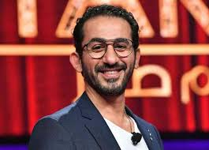
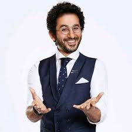

أحمد محمد حلمي عبد الرحمن عواد (مواليد 18 نوفمبر 1969)
هو ممثل كوميدي، ومنتج أفلام مصري. كانت بدايته في التلفزيون عندما كان يقدم برنامج لعب عيال (1998)،
ودخل عالم التمثيل مع المخرج شريف عرفة في فيلم عبود على الحدود (1999)، وبعدها انطلقت مسيرته الفنية.

شارك أحمد حلمي في أكثر من 25 فيلما، وعدة مسلسلات، ومسرحية واحدة

. وحصل علي عدة جوائز من أبرزها من مهرجان القاهرة السينمائي الدولي.
وقام بتقديم عدة برامج منها:
لعب عيال (1998)، ودربكة (1998)، ومن سيربح البونبون (2004)، وشوية عيال (2011)، وحلمي أون لاين.
كما شارك كعضو لجنة تحكيم في برنامج أرابز غوت تالنت المواسم: 3 و4 و5 و6.
وهو مؤسس شركة شادوز للإنتاج الفني والتوزيع. وقام بتأليف كتاب 28 حرف.